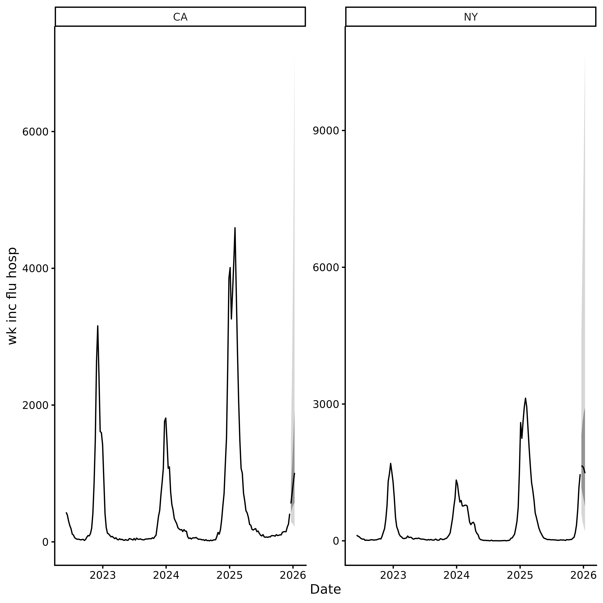

Overview
incast builds infectious disease forecasts in a few
steps:
-
get_data()orcheck_data(): fetch or validate surveillance data. -
get_ncast()(optional): correct recent weeks for reporting delays. -
get_cv()(optional): evaluate candidate models by time series cross-validation. -
get_fcast(): ensemble the best models into a forward-looking forecast.
The package follows the standard forecasting workflow described by Hyndman & Athanasopoulos (2021). The overall goal is to provide public health professionals with an easily-adoptable approach to generating, evaluating forecasts, and visualising infectious disease forecasts.
To get more information about how to know whether forecasting is the best approach for your task, follow the steps in this article.
Step 1: Get data
We fetch weekly flu hospital admissions for New York and California
from the CDC
NHSN via epidatr.
Setting revisions = TRUE retrieves the full revision
history (i.e. all past versions of the data), which is needed
for nowcasting.
# You may need a Delphi API key to run this code.
# See `?epidatr::get_api_key()` for details.
df <- get_data(pathogen = "flu", geo_value = c("ny", "ca"), revisions = TRUE)You can also provide your own data. Just pass it
through check_data(). See
vignette("external_data") for formatting details.
tail(example_data)
#> # A tibble: 6 × 5
#> as_of location target target_end_date observation
#> <date> <chr> <chr> <date> <dbl>
#> 1 2025-12-07 CA wk inc flu hosp 2025-12-06 233
#> 2 2025-12-14 CA wk inc flu hosp 2025-12-06 259
#> 3 2025-12-07 NY wk inc flu hosp 2025-12-06 1160
#> 4 2025-12-14 NY wk inc flu hosp 2025-12-06 1171
#> 5 2025-12-14 CA wk inc flu hosp 2025-12-13 412
#> 6 2025-12-14 NY wk inc flu hosp 2025-12-13 1462
df <- check_data(example_data)
autoplot(df)
Step 2: Nowcasting (optional)
The most recent weeks of surveillance data are almost always too low because hospitals are still filing late reports (right truncated). If you feed these raw counts into a forecaster, predictions will be biased downward.
get_ncast() estimates what the recent counts will look
like once all reports arrive. With the default
max_delay = 2, the last 2 weeks are corrected; everything
before that is left untouched.
ncast <- get_ncast(df)
ncast
#> <incast_ncast>
#> Target: wk inc flu hosp
#> Series: 2 (location)
#> Window: 2022-06-04 to 2025-12-13 (7-day interval)
#> Nowcast: 2025-12-06 to 2025-12-13
autoplot(ncast)
The corrected ncast$data contains two extra columns:
ncast_lower and ncast_upper (95% CrI) for the
corrected weeks. get_fcast() detects these automatically
and uses them to propagate nowcasting uncertainty into the final
forecast.
Step 3: Forecasting
Forecasting is split into two steps:
-
get_cv()(model selection): performs time series cross-validation on the full (median-corrected). Models are ranked by Weighted Interval Score (WIS). -
get_fcast()(final forecast): ensembles the besttop_nmodels and generates forecastshweeks ahead. When nowcast columns are available, forecasts are generated from the lower, median, and upper nowcast estimates and pooled, so prediction intervals capture both model and nowcast uncertainty.
Default models are:
NAIVE: Carries the last observed value forward. A simple baseline.ETS(Exponential Smoothing): A weighted average where recent weeks matter more than older ones. Adapts to trends and seasonal patterns.THETA: Splits the data into a long-term trend and short-term fluctuations, forecasts each separately, then combines them.ARIMA: Models temporal dependence in the series using autoregressive and moving average terms. Parameters are selected automatically.
Cross Validation
get_cv() performs rolling-origin time series
cross-validation.
Three arguments determine how cross-validation is performed.
h: the forecast horizon, that is, the number of reporting intervals to predict ahead.-
step: the spacing between forecast origins.-
step = h(default) produces non-overlapping forecasts and is the fastest option. -
step < hproduces overlapping forecasts, resulting in more evaluation points but requiring more model fits.
-
-
n_originsoreval_start_date: where the evaluation period starts. Supply exactly one:-
n_origins: the number of forecast origins. -
eval_start_date: the date of the first forecast origin.
-
A forecast origin at time d predicts intervals
d to d + h - 1, so n_origins
origins spaced step intervals apart cover the last
h + (n_origins - 1) * step reporting intervals of the
series. For example, with h = 4, step = 4, and
n_origins = 3, the evaluation period covers the last 12
intervals:
Forecast 1: [d, d+1, d+2, d+3]
Forecast 2: [d+4, d+5, d+6, d+7]
Forecast 3: [d+8, d+9, d+10, d+11]Increasing n_origins provides a more reliable comparison
of models, but leaves less historical data for training. Ensure that
each time series contains enough observations before the first forecast
origin to fit the models reliably.
The function returns an incast_cv object containing the
cross-validation results for each model and location.
cv <- get_cv(ncast, h = 4, n_origins = 16)
cv
#> <incast_cv>
#> Target: wk inc flu hosp
#> Series: 2 (location)
#> Window: 2022-06-04 to 2025-12-13 (7-day interval)
#> CV: 4 models x 16 origins (h = 4)Plot relative WIS by model and location using
autoplot(). Values of wis_relative_skill below
1 indicate better-than-average forecasts (lower WIS), while values above
1 indicate worse-than-average forecasts (higher WIS).
autoplot(cv)
Forecast
get_fcast() ensembles the best top_n models
from cross-validation and forecasts h reporting intervals
ahead. h defaults to the horizon used in
get_cv().
fcast <- get_fcast(cv, top_n = 2)
fcast
#> <incast_fcast>
#> Target: wk inc flu hosp
#> Series: 2 (location)
#> Forecast: 2025-12-20 to 2026-01-10 (h = 4)
#> Models: 3 + ENSEMBLEPlot the ensemble forecast with autoplot(fcast) (pass
model = to inspect any single model instead):
autoplot(fcast)
Adding custom models
Any model compatible with the fable framework can
be passed to get_cv()/get_fcast() via
models. Compose with default_models() to keep
the built-ins alongside your own:
library(fable)
library(fable.prophet)
library(EpiEstim)
library(projections)
my_models <- c(
default_models(),
list(
CUSTOM_ARIMA = ARIMA(observation ~ pdq(1, 1, 0)),
PROPHET = prophet(observation ~ season("year")),
NNETAR = NNETAR(observation),
EPIESTIM = EPIESTIM(observation, mean_si = 3, std_si = 2, rt_window = 7),
CHRONOS = FOUNDATION(log(observation), "chronos"),
TIMESFM = FOUNDATION(log(observation), "timesfm")
)
)
cv <- get_cv(
ncast,
n_origins = 16,
models = my_models
)
fcast <- get_fcast(cv, top_n = 3)Submit to RespiLens
RespiLens is a platform for
sharing respiratory disease forecasts. Use to_respilens()
to export the forecast as JSON for upload to MyRespiLens.
to_respilens(fcast, "respilens.json")